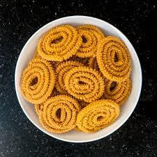

🍘 Chakli

Ingredients
- 2 cups rice flour
- 1/4 cup besan (gram flour)
- 1 tbsp white sesame seeds
- 1 tsp cumin seeds
- 1/2 tsp carom seeds (ajwain)
- 1 tsp red chili powder
- 1/2 tsp turmeric powder
- Salt to taste
- 2 tbsp hot oil (for dough)
- Water (as needed to make dough)
- Oil for deep frying
Instructions
- In a large bowl, mix rice flour, besan, sesame seeds, cumin seeds, carom seeds, red chili powder, turmeric powder, and salt.
- Heat 2 tbsp oil in a pan and pour it into the flour mixture. Mix well to ensure even distribution.
- Gradually add water and knead the dough into a smooth, firm texture (similar to dough for making poori or paratha).
- Preheat oil in a deep frying pan or kadai on medium heat.
- Fill a chakli maker or a piping bag with the dough, using the star-shaped nozzle.
- Press the dough into the hot oil, forming spiral shapes (chakli). Fry until golden brown and crispy on both sides.
- Remove the chaklis from the oil and drain on paper towels to remove excess oil.
- Allow them to cool completely before storing in an airtight container.
Serve With
- Chai (tea)
- Mint chutney (optional)
💡 Tip: Ensure the oil is hot enough before frying to achieve crispiness and avoid soggy chaklis.